第一节 · 楔子—圆的面积
初入山门，拦路的没有妖魔，只有石板上画着的一个圆。旁边留下一问：半径为 \displaystyle r 的圆，面积是多少？
你大概会不假思索地答：\displaystyle S=\pi r^2。这么熟悉的公式，也配做第一关的难题？正要往前走，石板上却又浮出一行字：“答案不错。可是，为什么？”
先把记住的公式放在一旁。矩形的面积，我们会算；三角形的面积，可以借助拼接来求；遇到一个多边形，也能把它分成若干个三角形，再将面积相加。这些招式，你早已用得熟练。
可眼前偏偏是一个圆。试着在圆里画一个正方形，面积算出来了，四周却空着几块；再换一个边数更多的多边形，空隙小了，仍旧没有消失。你不断加边，图形越来越像圆，可只要边数还是有限的，它就终究不是圆。差得很少，能算作完全相等吗？
也许你还记得，把圆切成许多扇形，再交错拼成一个近似的长方形。可那个“近似”，究竟如何才能成为“准确”？一幅看起来越来越像的图，足以说明面积恰好等于 \displaystyle \pi r^2 吗？
难处终于显出了真身：我们会算有限个直边图形的面积，却还缺少一座桥，把一次次近似带到一个确定的答案。仅凭目前掌握的有限分割与拼接，我们还不能完成这一步。 那座尚未搭起的桥，正是本回要学习的“极限”。
先把这个圆留在山门前。待我们习得新的本领，再回来回答它：如何通过极限，求出圆的准确面积？这便是第一关的大 Boss。
第二节 · 初识对手—多边形面积
要闯过这一关，先得认清对手。圆的面积暂时不会求，但圆里面的多边形，我们会算。于是，先固定一个半径为 \displaystyle r=1 的圆（单位圆），在里面画一个内接正多边形：“内接”是说顶点都在圆上，“正”是说各边相等、各角也相等。
把边数记为 \displaystyle n，这个多边形的面积记为 \displaystyle A_n。这里的下标是一张身份牌：\displaystyle A_3 是正三角形的面积，\displaystyle A_4 是正方形的面积，\displaystyle A_6 是正六边形的面积。圆的大小始终不变，改变的只有边数。
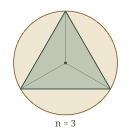
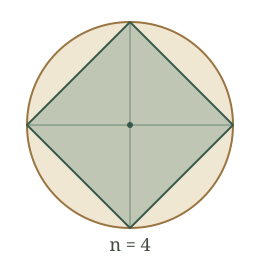
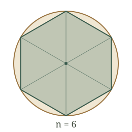
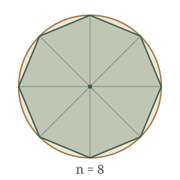
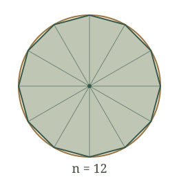
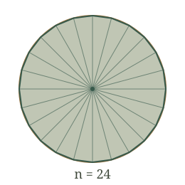
同一个圆，六种边数。绿色部分是多边形，浅色空隙是尚未覆盖的部分。
先看图：边数增加后，多边形的边界似乎越来越贴近圆。但眼睛只能帮助我们发现线索。要追踪这种变化，还得把图形变成可以计算的数。
从一个三角形算起。 连接圆心与每个顶点，内接正 \displaystyle n 边形便被分成 \displaystyle n 个完全相同的等腰三角形。它们的两条腰都是圆的半径 \displaystyle 1，顶角合起来是一整周，所以每个顶角为
\theta=\frac{360^\circ}{n}=\frac{2\pi}{n}\quad\text{（弧度）}.
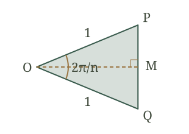
还记得三角形的“底乘高除以二”吗？高 \displaystyle OM 把顶角平分，在一侧的直角三角形中，半条底边为 \displaystyle \sin(\pi/n)，高为 \displaystyle \cos(\pi/n)。因此，这一块的面积是
\frac12\times 2\sin\frac{\pi}{n}\times \cos\frac{\pi}{n} =\frac12\sin\frac{2\pi}{n}.
最后一步用了倍角公式 \displaystyle 2\sin t\cos t=\sin(2t)。把这 \displaystyle n 块面积相加，就得到我们需要面对的对手：
\boxed{A_n=\frac{n}{2}\sin\frac{2\pi}{n},\qquad n=3,4,5,\ldots}
第三节 · 再识对手—集合与映射
我们先来看看，这个对手究竟长什么样。让边数依次取 \displaystyle n=3,4,5,6,\ldots，代入公式，就能算出相应的面积。先看前四项（保留六位小数）：
| 边数 \displaystyle n | 面积 \displaystyle A_n |
|---|---|
| 3 | 1.299038 |
| 4 | 2.000000 |
| 5 | 2.377641 |
| 6 | 2.598076 |
把这些面积按边数依次排开，就得到 \displaystyle A_3,A_4,A_5,\ldots。这样一串按次序排列的数，在数学上称为数列。
在这个数列中，\displaystyle n 表示多边形的边数，\displaystyle A_n 表示对应的面积。这是一个具体的实例。为了让研究得到的结论适用于更一般的问题，数学上要做的第一步，就是把研究对象进行抽象。为此，我们先引入集合与映射。
我们把所有允许的边数放在一起，得到集合 \displaystyle D=\{3,4,5,\ldots\}；把面积看作实数，用实数集 \displaystyle \mathbb{R} 容纳它们的取值。集合把选定的对象组织起来，让“研究哪些东西”有了明确的界定。
我们把所要研究的对象统称为元素（element），这些元素组成的总体叫做集合（set）。一般用大写字母如 \displaystyle A,B,C 表示集合，用小写字母如 \displaystyle x 或 \displaystyle a,b,c 表示元素。
- 如果 \displaystyle x 是集合 \displaystyle A 的元素，就说 \displaystyle x 属于集合 \displaystyle A，记作 \displaystyle x\in A。
- 如果 \displaystyle x 不是集合 \displaystyle A 的元素，就说 \displaystyle x 不属于集合 \displaystyle A，记作 \displaystyle x\notin A。
- 不包含任何元素的集合叫做空集（empty set），记为 \displaystyle\varnothing。
- 自然数集：\displaystyle\mathbb N=\{0,1,2,3,\ldots\}。
- 实数集：\displaystyle\mathbb R，包含有理数和无理数。
- 满足不等式 \displaystyle x-3<10 的所有实数构成集合 \displaystyle E=\{x\in\mathbb R:x<13\}。
集合为我们搭建了舞台，接下来要介绍的映射的概念则是这个舞台上的演员。
映射给出一条从输入到输出的规则。我们真正关心的，不只是几个孤立的数，而是这条规则怎样把它们联系起来。回看本回的大 Boss——圆的面积，我们已经把它化成了要追踪的面积规则：
\boxed{A_n=\frac{n}{2}\sin\frac{2\pi}{n},\qquad n=3,4,5,\ldots}
任意给定一个允许的边数 \displaystyle n\in D，都能按照同一条规则算出唯一的面积 \displaystyle A_n\in\mathbb{R}。这条对应规则，才是接下来要研究的对象。 映射把这种想法抽象出来，使它也能用于边数与面积之外的其他对象。
设 \displaystyle A,B 是两个集合。如果一条规则 \displaystyle f 使集合 \displaystyle A 中的每个元素都对应于集合 \displaystyle B 中唯一的一个元素，就称 \displaystyle f 为从 \displaystyle A 到 \displaystyle B 的映射（map），记作 f:A\longrightarrow B.
若映射 \displaystyle f 把元素 \displaystyle a\in A 对应到元素 \displaystyle b\in B，记作 f(a)=b. 此时 \displaystyle b 称为 \displaystyle a 的像，\displaystyle a 称为 \displaystyle b 的一个原像。
映射可以通过下面的示意图来理解：
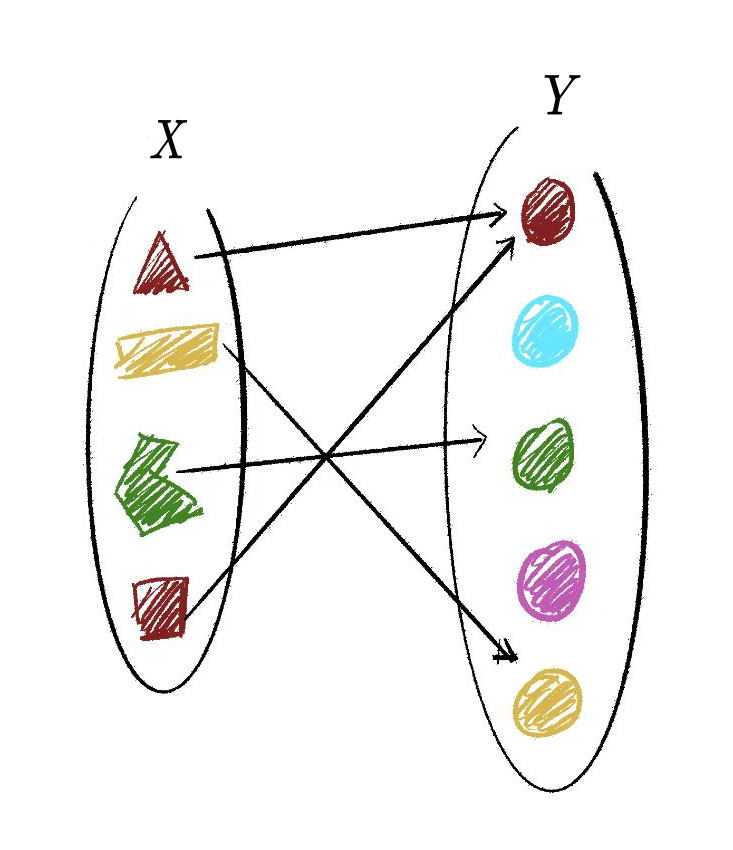
图中的 \displaystyle X,Y 分别表示输入集合和输出集合，箭头表示元素之间的对应关系。
映射需要满足两个要求：每个输入都有输出，且输出唯一。
- 对 \displaystyle A 中的每个元素，都必须给出 \displaystyle B 中的一个对应元素。
- 不同输入可以对应同一个输出，但同一个输入不能对应多个输出。
取人物集合 \displaystyle P=\{\text{李白},\text{杜甫},\text{苏轼}\}，把其中每个人对应到他的字：李白 \displaystyle \mapsto 太白，杜甫 \displaystyle \mapsto 子美，苏轼 \displaystyle \mapsto 子瞻。在这个选定的范围内，每个人都有一个确定的输出，因此这是一种映射。输入和输出都不是数，映射照样成立。
把李清照的两首词《如梦令·常记溪亭日暮》和《如梦令·昨夜雨疏风骤》分别对应到它们的词牌名，输出都是“如梦令”。不同的输入可以有相同的输出，这仍然是映射。
反过来，若规定“给一个词牌名，找出所有使用它的作品”，并把每一首作品分别作为输出，那么“如梦令”会对应多首词，不能唯一确定一首作品，因而不是从词牌集合到作品集合的映射。若另行约定输出是“这些作品组成的集合”，那便换了输出对象，可以构成另一种映射。
仍取 \displaystyle P=\{\text{李白},\text{杜甫},\text{苏轼}\}，却把输出集合限定为 \displaystyle Q=\{\text{太白},\text{子瞻}\}。若规则仍是“对应到自己的字”，杜甫就找不到属于 \displaystyle Q 的输出。这条规则不构成从 \displaystyle P 到 \displaystyle Q 的映射：定义域里的每个元素都必须被照顾到。
第四节 · 三识对手—数列与函数
映射的天地很广：人名、字、词牌、作品，都可以成为它的研究对象。现在，我们把目光收回来：许多映射只和数有关，而数可以比较大小、进行运算，还能标在坐标轴上。对接下来的研究而言，还有什么比数更方便处理呢！于是，我们把输入和输出的集合都限制为数集，就得到了函数。
在本课程中，从一个数集到另一个数集的映射，称为函数。通常写作 \displaystyle y=f(x)：\displaystyle x 是自变量，允许输入的数构成定义域；\displaystyle f(x) 是输入 \displaystyle x 后得到的唯一函数值。
函数仍然遵守映射的要求：每个允许的输入，都有且只有一个输出。
数列是一类特殊的函数，通常以正整数为自变量，按下标依次取值，记作 \displaystyle a_1,a_2,a_3,\ldots。我们的面积数列以边数为下标，从 \displaystyle 3 开始：
\begin{gathered} A:D\longrightarrow\mathbb R,\qquad D=\{3,4,5,\ldots\},\\ A_n=\frac n2\sin\frac{2\pi}{n}. \end{gathered}
每给定一个允许的边数，就得到唯一的面积。因此，这个数列也是一个函数，只是它的输入只能取 \displaystyle 3,4,5,\ldots，不能取 \displaystyle 3.5。下面再看两个自变量可以取任意实数的函数。
取 \displaystyle f(x)=2x+1，定义域为 \displaystyle \mathbb{R}。输入 \displaystyle x=-1,0,1,2，输出依次为 \displaystyle -1,1,3,5。自变量每增加 \displaystyle 1，函数值就增加 \displaystyle 2。把所有点 \displaystyle (x,2x+1) 画在平面上，会得到一条直线。
取 \displaystyle g(x)=x^2，定义域也为 \displaystyle \mathbb{R}。输入 \displaystyle x=-2,-1,0,1,2，输出依次为 \displaystyle 4,1,0,1,4。不同输入可以给出相同输出，例如 \displaystyle g(-2)=g(2)=4，但每个输入仍只对应一个值。它的图像是一条抛物线。
第五节 · 火眼金睛—函数图像
认清了函数的规则，还要看清它变化的模样。只盯着公式，有时很难看出端倪；把输入与输出画成坐标平面上的点，变化便有了形状。函数图像，就是让函数无所遁形的法宝，也是我们的火眼金睛。
函数 \displaystyle y=f(x) 的图像，就是定义域中所有 \displaystyle x 所对应的点 \displaystyle (x,f(x)) 组成的集合。横坐标放输入，纵坐标放输出，一个点记录一组对应关系。公式把规则写出来，图像则把规则画出来。
先把上一节的两个函数画出来：一次函数显出一条直线，二次函数显出一条抛物线。
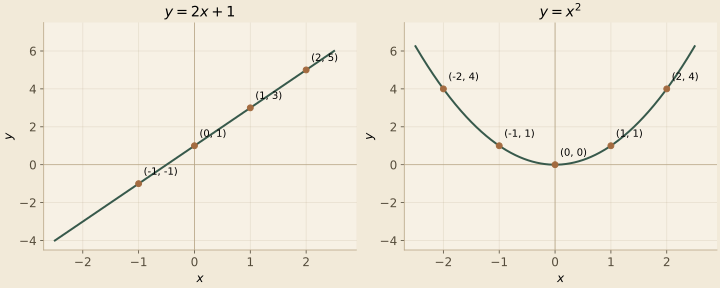
学会了这件法宝，就要经常用它。以后遇到一个函数或数列，不妨先问：它的图像是什么模样？ 它往上走还是往下走，变化快还是慢，有没有逐渐靠近某个高度？每个实变量实值函数都有自己的图像，数列也不例外；实际作图时，我们选取合适的范围和代表性的点来观察，而不必把无穷多个点逐一画完。
现在，就让圆面积的对手显形。面积数列的图像由 \displaystyle (3,A_3),(4,A_4),(5,A_5),\ldots 这些离散的点组成。点与点之间不能随意添值或连成连续曲线：多边形没有 \displaystyle 3.5 条边。
让边数继续增大，把数列看得更远一些。下表列出更多的面积值，均保留六位小数。
| 边数 \displaystyle n | 面积 \displaystyle A_n |
|---|---|
| 3 | 1.299038 |
| 4 | 2.000000 |
| 5 | 2.377641 |
| 6 | 2.598076 |
| 8 | 2.828427 |
| 12 | 3.000000 |
| 24 | 3.105829 |
| 48 | 3.132629 |
| 96 | 3.139350 |
| 192 | 3.141032 |
| 1000 | 3.141572 |
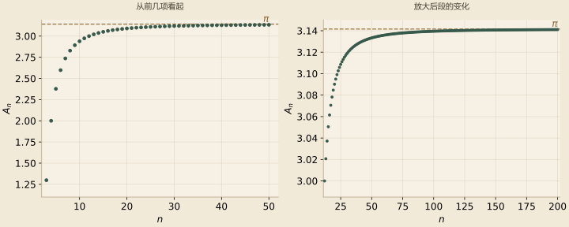
- 表中的面积怎样变化？变化的幅度是否相同？选取 \displaystyle n=12,24,48,96，比较每次边数翻倍后面积增加了多少。
- 后几行的数字让你想到了哪个熟悉的数？你猜测，当边数继续增加时，面积会趋向哪里？先写下猜想和理由。
- 如果两个面积在保留六位小数后完全相同，能否断定它们真正相等？图形看不出空隙，是否就意味着空隙已经消失？
- 这十一行数据，足以说明所有更大的边数都遵循同样的规律吗？要把观察变成结论，我们还缺少什么？
不妨先与同伴交换看法，再继续往下读。表格能给出线索，却不能代替对所有情形的论证。 圆的准确面积，仍是等待我们攻克的问题。
这条面积规则看起来还有些复杂。先把它改写为
A_n=\pi\frac{\sin(2\pi/n)}{2\pi/n}.
外面的 \displaystyle \pi 只是固定的倍数。把面积除以 \displaystyle \pi，再把里面反复出现的 \displaystyle 2\pi/n 记作 \displaystyle x，就露出了一个更简单的函数：
f(x)=\frac{\sin x}{x},\qquad x\ne0.
这不是把 \displaystyle \pi 随意删掉，而是换了一把纵轴的尺子，并重新标记输入。记 \displaystyle x_n=2\pi/n，二者的准确关系是
\boxed{\frac{A_n}{\pi}=f(x_n),\qquad x_n=\frac{2\pi}{n}.}
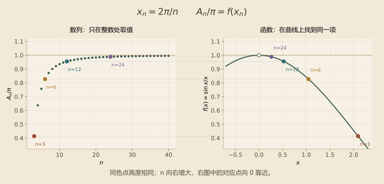
例如 \displaystyle n=6 时，左图取第 \displaystyle 6 项的高度 \displaystyle A_6/\pi；右图则在 \displaystyle x_6=\pi/3 处取值，得到完全相同的高度 \displaystyle f(\pi/3)。每一个允许的 \displaystyle n，都在右边的曲线上选出一个点；右边还有许多点，并不对应整数边数。
- 沿左图让 \displaystyle n 越来越大，同色点在右图中向哪个方向移动？请用 \displaystyle x_n=2\pi/n 解释。
- 这些点的高度似乎越来越接近多少？若 \displaystyle A_n/\pi 趋近 \displaystyle 1，原来的面积 \displaystyle A_n 应趋近多少？
- 右图在 \displaystyle (0,1) 处画了空心点。为什么不能直接把 \displaystyle x=0 代入 \displaystyle \sin x/x？“附近的值趋向哪里”和“这一点有没有值”，是同一个问题吗？
我们终于看清：边数不断增大，对应角度不断缩小；面积数列的趋向，藏在函数 \displaystyle \sin x/x 靠近 \displaystyle 0 时的模样里。 对圆面积来说，只需从正数一侧靠近 \displaystyle 0；函数本身在负数处也有定义，图中一并画出，供我们比较。
观察这些点与曲线，我们有了一种“趋近于”的感觉：边数越大，面积似乎越靠近一个确定的数；\displaystyle x 越靠近 \displaystyle 0，\displaystyle \sin x/x 的值似乎越靠近 \displaystyle 1。但我们目前还缺少准确描述无限趋近的工具。图像让我们看见了方向，怎样把这种感觉说清楚，还要继续探寻。
第六节 · 无穷之惑—希尔伯特的酒店
刚才，我们让边数不断增加，追问面积会趋向哪里。“继续下去”说起来轻巧，却把我们带到了一个新世界：无限。在那里，一些在有限情形下屡试不爽的直觉，未必还能直接照搬。
想象一家酒店，房间按 \displaystyle 1,2,3,\ldots 编号，有无穷多个房间，而且每间都住着客人。此时又来了一位客人。店已住满，还能安排他住下吗？
对只有有限间客房的酒店，答案很明确。但这家酒店的经理让原来住在第 \displaystyle n 间的客人搬到第 \displaystyle n+1 间。这样，每位原有的客人都有新房间，没有两人挤在同一间，第 \displaystyle 1 间却空了出来。
关键在于：这里没有“最后一间”。有限酒店这样搬，总会把最后一位客人挤出去；而对每一个正整数 \displaystyle n，编号 \displaystyle n+1 的房间都存在。先看视频，再想想，你原先认定的哪一步，在这里发生了变化？
还是这家住满客人的无限酒店。若有无穷多位客人退房，还会剩下多少位？分别想一想：
- 所有房间的客人都退房。
- 除了第 \displaystyle 1 间，其余房间的客人都退房。
- 所有偶数号房间的客人退房，奇数号房间的客人留下。
三种情形中，原来都有无穷多位客人，离开的也都有无穷多位。留下的人数一样吗？能不能把它们都写成“无穷减无穷”，再像普通的数那样相减，得到零？ 先与同伴讨论，说说你的理由。
带着这些疑问，我们继续往前：当有限的直觉不再够用，怎样才能准确描述“无限接近”？
第七节 · 极限的数学定义
敌人藏在“无穷”之中，而我们手里的招式，却是在有限的世界里练成的。能不能用有限的方法，解决无穷的问题？ 从十七世纪微积分的建立，到十九世纪极限语言逐步严格化，数学家们为此经历了一个多世纪的探索。
不妨把他们找到的办法，想象成师傅与徒弟的一场较量。两人先盯住一个候选的数 \displaystyle A：数列真的会无限趋近于它吗？师傅负责出题：“我要误差小于百分之一。”徒弟负责应答：“从这一项往后，每一项都能做到。”师傅又把要求收紧到万分之一、百万分之一，徒弟便给出相应的新起点。
师傅手里的题，叫作 \displaystyle \varepsilon，是一个任意给定的正数；徒弟交出的答案，叫作 \displaystyle N，是一个有限的正整数。徒弟不能只挑出几项交差，而要说明：所有 \displaystyle n>N 的项，都满足 \displaystyle |a_n-A|<\varepsilon。 出题、找起点、比较大小，用的仍是有限数的运算与不等式。
真正的本领，不是接住刚才那几道题，而是有一套应答办法：无论师傅把正的误差要求定得多小，徒弟总能找到一个起点，并保证其后的所有项都过关。 这场较量不需要真的进行无穷多轮；能证明每一道可能的题都有答案，就把“无限趋近于 \displaystyle A”说清楚了。这便是数列极限的定义。
设 \displaystyle \{a_n\} 是一个实数数列，\displaystyle A 是实数。如果对任意 \displaystyle \varepsilon>0，都能找到正整数 \displaystyle N，使所有满足 \displaystyle n>N 的项都有
|a_n-A|<\varepsilon,
就称数列的极限为 \displaystyle A，记为 \displaystyle\lim_{n\to\infty}a_n=A。
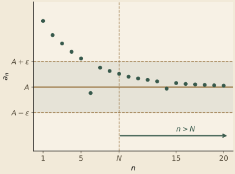
数列的点可以不规则起伏，不要求单调变化；关键是越过 \displaystyle N 后，每一项都落在 \displaystyle A 上下的 \displaystyle \varepsilon 误差带内。点不连线，图中只展示有限项；定义要求控制全部后续项。
用极限的定义证明 \displaystyle\lim_{n\to\infty}\frac1n=0。
给定 \displaystyle\varepsilon>0，从 \displaystyle1/n<\varepsilon 出发，确定 \displaystyle N 的取法。
任给 \displaystyle\varepsilon>0，选取正整数 \displaystyle N\ge1/\varepsilon。对任意正整数 \displaystyle n>N，都有
\left|\frac1n-0\right|=\frac1n<\frac1N\le\varepsilon.
因此，按照数列极限的定义，\displaystyle\lim_{n\to\infty}1/n=0。
例如，要求误差小于 \displaystyle0.01，可取 \displaystyle N=100；要求小于 \displaystyle0.0001，可取 \displaystyle N=10000。取法不唯一，能保证其后所有项满足要求即可。
用极限的定义证明 \displaystyle\lim_{n\to\infty}\frac1{n^2}=0。
要使 \displaystyle1/n^2<\varepsilon，只需 \displaystyle n>1/\sqrt{\varepsilon}。据此选择正整数 \displaystyle N。
任给 \displaystyle\varepsilon>0，选取正整数 \displaystyle N\ge1/\sqrt{\varepsilon}。对任意正整数 \displaystyle n>N，都有
\left|\frac1{n^2}-0\right|=\frac1{n^2}<\frac1{N^2}\le\varepsilon.
因此，按照数列极限的定义，\displaystyle\lim_{n\to\infty}1/n^2=0。
例如，要求误差小于 \displaystyle0.01，可取 \displaystyle N=10；要求小于 \displaystyle0.0001，可取 \displaystyle N=100。与 \displaystyle1/n 相比，同样的误差要求可以更早满足。
设 \displaystyle A 为实数，函数 \displaystyle f 在 \displaystyle x_0 附近、除 \displaystyle x_0 本身外有定义。如果对任意 \displaystyle \varepsilon>0，都存在 \displaystyle \delta>0，使得
0<|x-x_0|<\delta \quad\Longrightarrow\quad |f(x)-A|<\varepsilon,
就称 \displaystyle f(x) 在 \displaystyle x\to x_0 时的极限为 \displaystyle A，记作 \displaystyle\lim_{x\to x_0}f(x)=A。
\displaystyle \delta 控制输入离 \displaystyle x_0 多近，\displaystyle \varepsilon 控制输出离 \displaystyle A 多近。条件中的 \displaystyle 0< 表示我们研究的是靠近这个点的过程，不要求函数在这个点有定义。
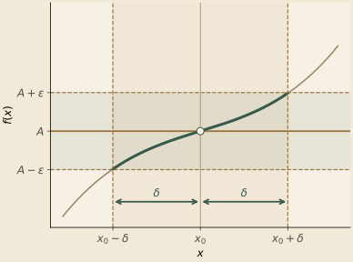
图中实线表示极限高度 \displaystyle A，虚线标出 \displaystyle \varepsilon 误差带和输入界线；绿色点或曲线表示相应的数列项或函数值。示意图只展示一次误差要求，定义要求对每一个 \displaystyle \varepsilon>0 都成立。
这里 \displaystyle n 取正整数，\displaystyle x 取函数定义域内的值，且 \displaystyle x_0 的任意去心邻域内都有定义域中的点。\displaystyle N 或 \displaystyle \delta 可以依赖于 \displaystyle \varepsilon；选定后，须对满足输入条件的所有 \displaystyle n 或 \displaystyle x 都有效。函数在 \displaystyle x_0 处的取值不参与这一要求。
| 数列 | 函数 | |
|---|---|---|
| 图像 | ||
| 中文 | 对任意 \displaystyle \varepsilon>0，存在 \displaystyle N>0，使得当 \displaystyle n>N 时，都有 \displaystyle \lvert a_n-A\rvert<\varepsilon。 | 对任意 \displaystyle \varepsilon>0，存在 \displaystyle \delta>0，使得当 \displaystyle 0<\lvert x-x_0\rvert<\delta 时，都有 \displaystyle \lvert f(x)-A\rvert<\varepsilon。 |
| 英文 | For all \displaystyle \varepsilon>0, there exists \displaystyle N>0 such that \displaystyle \lvert a_n-A\rvert<\varepsilon if \displaystyle n>N. | For all \displaystyle \varepsilon>0, there exists \displaystyle \delta>0 such that \displaystyle \lvert f(x)-A\rvert<\varepsilon if \displaystyle 0<\lvert x-x_0\rvert<\delta. |
| 数学 | \displaystyle\begin{gathered}\forall\varepsilon>0,\ \exists N>0,\ \text{s.t.}\\\lvert a_n-A\rvert<\varepsilon\ \text{if }n>N.\end{gathered} | \displaystyle\begin{gathered}\forall\varepsilon>0,\ \exists\delta>0,\ \text{s.t.}\\\lvert f(x)-A\rvert<\varepsilon\\\text{if }0<\lvert x-x_0\rvert<\delta.\end{gathered} |
回看大 Boss 对应的面积数列 \displaystyle A_n=\dfrac n2\sin\dfrac{2\pi}{n}。我们猜测它趋向 \displaystyle \pi。若直接用定义证明，就要对任意 \displaystyle \varepsilon>0，找到 \displaystyle N>0，保证所有 \displaystyle n>N 都满足
\left|\frac n2\sin\frac{2\pi}{n}-\pi\right|<\varepsilon.
若改看函数 \displaystyle f(x)=\sin x/x，要证明其在 \displaystyle x\to0 时趋向 \displaystyle 1，就要找到 \displaystyle \delta>0，保证
0<|x|<\delta\quad\Longrightarrow\quad \left|\frac{\sin x}{x}-1\right|<\varepsilon.
困难在于：我们目前还没有合适的不等式来控制这两种误差，因而暂时难以给出满足要求的 \displaystyle N 或 \displaystyle \delta。
若把从定义出发逐一控制误差看作普攻，接下来就要学习一套连招：把已经掌握的极限组合起来，求出新极限。这套连续技，就是极限的四则运算。它也有使用条件；先学会出招，再回头试试大 Boss。
第八节 · 极限的四则运算
定义让我们说清了什么叫“趋近”，但每遇到一个新式子，都重新与师傅较量一番，未免费力。能不能借助已经知道的极限，算出更多极限？四则运算，就是把简单结果组合起来的基本招式。
数列极限的四则运算法则
若两个数列分别趋向有限数 \displaystyle A,B，即 \displaystyle a_n\to A、\displaystyle b_n\to B，则
\begin{aligned} &\lim_{n\to\infty}(a_n+b_n)=A+B,\\ &\lim_{n\to\infty}(a_n-b_n)=A-B,\\ &\lim_{n\to\infty}(a_nb_n)=AB,\\ &\lim_{n\to\infty}\frac{a_n}{b_n}=\frac AB\qquad(B\ne0). \end{aligned}
函数极限的四则运算法则
若同一趋近过程 \displaystyle x\to x_0 下，两个有限极限同时存在：
\lim_{x\to x_0}f(x)=A,\qquad \lim_{x\to x_0}g(x)=B,
则
\begin{aligned} &\lim_{x\to x_0}\bigl(f(x)+g(x)\bigr)=A+B,\\ &\lim_{x\to x_0}\bigl(f(x)-g(x)\bigr)=A-B,\\ &\lim_{x\to x_0}\bigl(f(x)g(x)\bigr)=AB,\\ &\lim_{x\to x_0}\frac{f(x)}{g(x)}=\frac AB\qquad(B\ne0). \end{aligned}
数列和函数的上述运算法则，都要求两个极限 \displaystyle A、\displaystyle B 同时存在，且都是有限数。只要有一个不存在，就不能直接使用上述法则。
需要特别小心：使用除法时，还要求分母的极限 \displaystyle B\ne0。
分母的极限为零，不能直接使用商法则。 例如，当 \displaystyle x\to0 时，下面两式的分子、分母都趋向零，但在 \displaystyle x\ne0 时，
\frac{x}{x}=1,\qquad \frac{x^2}{x}=x.
它们的极限分别是 \displaystyle 1 和 \displaystyle 0。所以，“分子、分母都趋于零”还不能告诉我们商趋向什么，更不能把 \displaystyle 0/0 当成答案。遇到这种情形，要先化简，或寻找其他方法。
已知 \displaystyle \lim_{n\to\infty}1/n=0、\displaystyle \lim_{n\to\infty}1/n^2=0，求下列极限：
- \displaystyle\lim_{n\to\infty}\left(3-\frac2n+\frac1{n^2}\right)；
- \displaystyle\lim_{n\to\infty}\left(2+\frac1n\right)\left(3-\frac1n\right)。
分别考察各部分的极限，再使用加减、常数倍和乘法法则。
由已知的两个极限及四则运算法则，
\lim_{n\to\infty}\left(3-\frac2n+\frac1{n^2}\right)=3-2\times0+0=3.
两因子的极限都存在且有限，所以
\lim_{n\to\infty}\left(2+\frac1n\right)\left(3-\frac1n\right)=(2+0)(3-0)=6.
求 \displaystyle\lim_{n\to\infty}\frac{2n+1}{n+3}。
将分子、分母同除以 \displaystyle n，再检查商法则的条件。
分子、分母都没有有限极限，不能对原式直接使用商法则。将分子、分母同除以 \displaystyle n：
\lim_{n\to\infty}\frac{2n+1}{n+3} =\lim_{n\to\infty}\frac{2+1/n}{1+3/n} =\frac{2+0}{1+0}=2.
整理后，分子极限为 \displaystyle 2，分母极限为 \displaystyle 1\ne0，满足商法则的条件。
求 \displaystyle\lim_{x\to2}\frac{x^2+1}{x+1}。
从 \displaystyle \lim_{x\to2}x=2 出发，依次使用乘法、加法和商法则。
当 \displaystyle x\to2 时，
\lim_{x\to2}(x^2+1)=2^2+1=5,\qquad \lim_{x\to2}(x+1)=2+1=3\ne0.
两个极限同时存在且有限，分母极限不为零，因此
\lim_{x\to2}\frac{x^2+1}{x+1}=\frac53.
求 \displaystyle\lim_{x\to1}\frac{x^3-1}{x^2-1}。
先检查原式是否满足商法则的条件，再将分子、分母因式分解。
当 \displaystyle x\to1 时，分子、分母的极限都为 \displaystyle0，不能直接使用商法则。对 \displaystyle x\ne1 且充分靠近 \displaystyle 1 的 \displaystyle x，
\frac{x^3-1}{x^2-1} =\frac{(x-1)(x^2+x+1)}{(x-1)(x+1)} =\frac{x^2+x+1}{x+1}.
化简后，分子极限为 \displaystyle 3，分母极限为 \displaystyle 2\ne0，因此
\lim_{x\to1}\frac{x^3-1}{x^2-1}=\frac{1+1+1}{1+1}=\frac32.
求 \displaystyle\lim_{x\to4}\frac{\sqrt{x}-2}{x-4}。
将分子、分母同乘 \displaystyle\sqrt{x}+2，先消去导致分母趋于零的因子。
原式的分子、分母都趋于 \displaystyle 0，不能直接使用商法则。对 \displaystyle x\ge0 且 \displaystyle x\ne4，有
\frac{\sqrt{x}-2}{x-4} =\frac{x-4}{(x-4)(\sqrt{x}+2)} =\frac1{\sqrt{x}+2}.
由
|\sqrt{x}-2|=\frac{|x-4|}{\sqrt{x}+2}\le\frac{|x-4|}{2},
可知 \displaystyle x\to4 时 \displaystyle\sqrt{x}\to2。化简后的分母极限为 \displaystyle4\ne0，所以
\lim_{x\to4}\frac{\sqrt{x}-2}{x-4}=\frac1{2+2}=\frac14.
先试数列的四则运算。面积数列可以写成
A_n=\frac n2\sin\frac{2\pi}{n} =\pi\frac{\sin(2\pi/n)}{2\pi/n}.
第一种写法中，\displaystyle n/2 没有有限极限，不能直接使用前面的乘法法则；第二种写法中，分子、分母都趋于 \displaystyle 0，又不能直接使用商法则。
再试函数的商法则。我们知道
\lim_{x\to0}\sin x=0,\qquad \lim_{x\to0}x=0.
两个极限都存在，但分母的极限是 \displaystyle 0，不能直接用商法则求 \displaystyle \lim_{x\to0}\sin x/x。这里是分母趋于零，不是允许把 \displaystyle x=0 代入；\displaystyle 0/0 也不是一个极限值。
这套连招暂时还拿不下大 Boss：仅凭上述四则运算法则，无法直接求出这里的极限。 这不表示极限不存在，而是提醒我们还需要新的估计方法。
第九节 · 七十二变—换元法
同一个式子，换一个变量来写，结构可能更清楚。换元法就是给式子中反复出现或较复杂的部分取一个新名字，再用新变量计算。
用换元法计算 \displaystyle\lim_{x\to2}\frac{x^2-4}{x-2}。
令 \displaystyle t=x-2，则 \displaystyle x=t+2。先写出 \displaystyle t 的趋向。
令 \displaystyle t=x-2，则 \displaystyle x=t+2，且 \displaystyle x\to2 时 \displaystyle t\to0。在 \displaystyle t\ne0 时，
\frac{x^2-4}{x-2} =\frac{(t+2)^2-4}{t} =t+4.
因此
\lim_{x\to2}\frac{x^2-4}{x-2} =\lim_{t\to0}(t+4)=4.
用换元法计算 \displaystyle\lim_{x\to0}\frac{(1+3x)^2-1}{x}。
令 \displaystyle t=3x，注意原分母 \displaystyle x=t/3。
令 \displaystyle t=3x，则 \displaystyle x=t/3，且 \displaystyle x\to0 时 \displaystyle t\to0。对 \displaystyle t\ne0，
\frac{(1+3x)^2-1}{x} =\frac{(1+t)^2-1}{t/3} =3\frac{2t+t^2}{t}=3(2+t).
故
\lim_{x\to0}\frac{(1+3x)^2-1}{x} =\lim_{t\to0}3(2+t)=6.
分母由 \displaystyle x 变为 \displaystyle t/3，所以系数 \displaystyle3 不能遗漏。
用换元法计算 \displaystyle\lim_{x\to0}\frac{\sqrt{1+x}-1}{x}。
令 \displaystyle t=\sqrt{1+x}-1，由 \displaystyle\sqrt{1+x}=t+1 写出 \displaystyle x。
令 \displaystyle t=\sqrt{1+x}-1。因为
|t|=\frac{|x|}{\sqrt{1+x}+1}\le|x|\qquad(x>-1),
所以 \displaystyle x\to0 时 \displaystyle t\to0。又有
x=(t+1)^2-1=t(t+2).
在充分靠近 \displaystyle0 的去心邻域内，\displaystyle x\ne0 等价于 \displaystyle t\ne0，于是
\frac{\sqrt{1+x}-1}{x} =\frac{t}{t(t+2)}=\frac1{t+2}.
因此
\lim_{x\to0}\frac{\sqrt{1+x}-1}{x} =\lim_{t\to0}\frac1{t+2}=\frac12.
后面计算极限、研究复合函数，以及学习求导和积分时，还会反复用到换元法。换元时，要把表达式和变量的趋向一起改写。
第十节 · 两边夹定理
两边夹定理可以直接根据极限的定义证明。 这是本书为数不多的定理证明之一：我们分别写出数列和函数的证明，看看定义怎样成为推理的工具。
设 \displaystyle\{a_n\}、\displaystyle\{b_n\}、\displaystyle\{c_n\} 为实数数列。若存在 \displaystyle N_0>0，使得
a_n\le b_n\le c_n,\qquad \forall n>N_0,
且
\lim_{n\to\infty}a_n=\lim_{n\to\infty}c_n=A\in\mathbb R,
则 \displaystyle\{b_n\} 收敛，且
\boxed{\lim_{n\to\infty}b_n=A.}
任取 \displaystyle\varepsilon>0。由 \displaystyle\lim_{n\to\infty}a_n=A，存在 \displaystyle N_1>0，使所有 \displaystyle n>N_1 都满足 \displaystyle|a_n-A|<\varepsilon；由 \displaystyle\lim_{n\to\infty}c_n=A，存在 \displaystyle N_2>0，使所有 \displaystyle n>N_2 都满足 \displaystyle|c_n-A|<\varepsilon。
取 \displaystyle N=\max\{N_0,N_1,N_2\}。对任意正整数 \displaystyle n>N，上述三个条件同时成立，故
A-\varepsilon<a_n\le b_n\le c_n<A+\varepsilon.
于是 \displaystyle|b_n-A|<\varepsilon。由于 \displaystyle\varepsilon>0 任意，按照数列极限的定义，\displaystyle\lim_{n\to\infty}b_n=A。证毕。
设 \displaystyle f,g,h 在 \displaystyle x_0 的某个去心邻域内都有定义。若存在 \displaystyle\delta_0>0，使得
0<|x-x_0|<\delta_0\quad\Longrightarrow\quad f(x)\le g(x)\le h(x),
且
\lim_{x\to x_0}f(x)=\lim_{x\to x_0}h(x)=A\in\mathbb R,
则 \displaystyle g 在 \displaystyle x\to x_0 时的极限存在，且
\boxed{\lim_{x\to x_0}g(x)=A.}
任取 \displaystyle\varepsilon>0。由 \displaystyle\lim_{x\to x_0}f(x)=A，存在 \displaystyle\delta_1>0，使得 \displaystyle0<|x-x_0|<\delta_1 时有 \displaystyle|f(x)-A|<\varepsilon；由 \displaystyle\lim_{x\to x_0}h(x)=A，存在 \displaystyle\delta_2>0，使得 \displaystyle0<|x-x_0|<\delta_2 时有 \displaystyle|h(x)-A|<\varepsilon。
取 \displaystyle\delta=\min\{\delta_0,\delta_1,\delta_2\}>0。对任意满足 \displaystyle0<|x-x_0|<\delta 的 \displaystyle x，上述三个条件同时成立，故
A-\varepsilon<f(x)\le g(x)\le h(x)<A+\varepsilon.
于是 \displaystyle|g(x)-A|<\varepsilon。由于 \displaystyle\varepsilon>0 任意，按照函数极限的定义，\displaystyle\lim_{x\to x_0}g(x)=A。证毕。
求 \displaystyle\lim_{n\to\infty}\frac{(-1)^n}{n}。
由 \displaystyle-1\le(-1)^n\le1，给出这个数列的上下界。
对每个正整数 \displaystyle n，有
-\frac1n\le\frac{(-1)^n}{n}\le\frac1n.
由于 \displaystyle\lim_{n\to\infty}(-1/n)=\lim_{n\to\infty}(1/n)=0，由数列的两边夹定理，
\boxed{\lim_{n\to\infty}\frac{(-1)^n}{n}=0.}
第十一节 · Boss 战—圆面积
为了攻克圆面积这个大 Boss，我们需要一个不等式。这个不等式可以直接从下面的单位圆图中看出来。角 \displaystyle x 用弧度表示，当 \displaystyle0<x<\pi/2 时，
\boxed{\sin x<x<\tan x.}
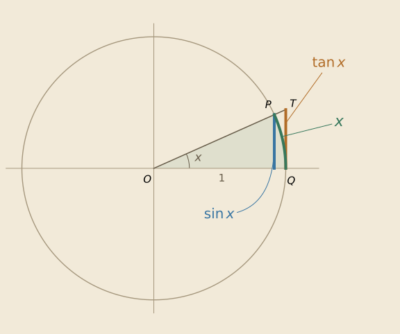
图中取单位圆上的点 \displaystyle P=(\cos x,\sin x)，从 \displaystyle Q=(1,0) 作切线，与射线 \displaystyle OP 交于 \displaystyle T。\displaystyle P 到横轴的距离为 \displaystyle\sin x，圆弧 \displaystyle QP 的长度为 \displaystyle x——这里使用了弧长公式 \displaystyle s=r\theta（\displaystyle\theta 用弧度表示），单位圆中 \displaystyle r=1、\displaystyle\theta=x，所以 \displaystyle s=x；切线段 \displaystyle QT 的长度为 \displaystyle\tan x。这三个长度的比较给出上述不等式；这里比较的是长度，不借用圆或扇形的面积公式。
由 \displaystyle\sin x<x<\tan x，除以正数 \displaystyle\sin x，得到
1<\frac{x}{\sin x}<\frac1{\cos x}.
三者都为正数，取倒数后不等号方向改变，整理得到
\cos x<\frac{\sin x}{x}<1,\qquad 0<x<\frac\pi2.
当 \displaystyle x\to0 时，\displaystyle\cos x\to1，这一点可以从余弦函数的图像上直观地看出来。由两边夹定理，得到
\boxed{\lim_{x\to0}\frac{\sin x}{x}=1.}
上面只讨论了 \displaystyle x 从正数方向趋于 \displaystyle0 的情况；从负数方向趋于 \displaystyle0 也有相同结论，补充说明见本节末尾的注。
这里 \displaystyle x 必须用弧度表示。函数在 \displaystyle x=0 处没有定义，并不妨碍它在这里存在极限。
现在回到半径为 \displaystyle r 的圆。其内接正 \displaystyle n 边形的面积为
A_n=\frac{nr^2}{2}\sin\frac{2\pi}{n} =\pi r^2\frac{\sin(2\pi/n)}{2\pi/n}.
当 \displaystyle n\to\infty 时，\displaystyle2\pi/n\to0。利用刚得到的极限，
\lim_{n\to\infty}A_n=\pi r^2.
按内接正多边形逼近的方式定义圆面积，圆面积就是上述面积数列的极限。因此
\boxed{S=\lim_{n\to\infty}A_n=\pi r^2.}
两边夹定理的几何解释
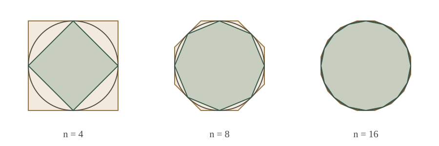
内接面积 \displaystyle A_n 不超过圆面积，外接面积 \displaystyle B_n 不小于圆面积。随着边数增大，两者都趋向同一个数 \displaystyle\pi r^2，并且
\lim_{n\to\infty}(B_n-A_n)=\pi r^2-\pi r^2=0.
因此，内外两种近似之间的面积差趋于零，夹在它们之间的圆面积被确定为 \displaystyle\pi r^2。有限边数时，面积差仍大于零；我们没有把某个有限多边形直接当成圆。
设角度用弧度表示。由单位圆中的长度比较，当 \displaystyle0<t<\pi/2 时，
\sin t<t<\tan t,
从而
\cos t<\frac{\sin t}{t}<1.
先控制 \displaystyle\cos t 与 \displaystyle1 的误差。由上述长度不等式及正弦函数的奇偶关系，当 \displaystyle|u|<\pi/2 时，有 \displaystyle|\sin u|\le|u|。结合半角恒等式，当 \displaystyle|t|<\pi 时，
0\le1-\cos t=2\sin^2(t/2)\le\frac{t^2}{2}.
因此，任给 \displaystyle\varepsilon>0，只要 \displaystyle0<|t|<\min\{1,\sqrt{2\varepsilon}\}，就有 \displaystyle|\cos t-1|<\varepsilon。这也从定义证明了 \displaystyle\lim_{t\to0}\cos t=1。
下面直接验证正弦比值的极限定义。任取 \displaystyle\varepsilon>0，取
\delta=\min\left\{\frac\pi2,\sqrt{2\varepsilon}\right\}>0.
当 \displaystyle0<x<\delta 时，由前面的不等式，
0<1-\frac{\sin x}{x}<1-\cos x \le\frac{x^2}{2}<\varepsilon.
所以 \displaystyle\left|\frac{\sin x}{x}-1\right|<\varepsilon。
当 \displaystyle-\delta<x<0 时，令 \displaystyle t=-x，则 \displaystyle0<t<\delta，并且
\frac{\sin x}{x}=\frac{\sin(-t)}{-t}=\frac{\sin t}{t}.
由正数情形的估计，同样有
\left|\frac{\sin x}{x}-1\right| =\left|\frac{\sin t}{t}-1\right|<\varepsilon.
综上，对任意 \displaystyle\varepsilon>0，上述 \displaystyle\delta 都能保证
0<|x|<\delta\quad\Longrightarrow\quad \left|\frac{\sin x}{x}-1\right|<\varepsilon.
因此，根据函数极限的定义，
\boxed{\lim_{x\to0}\frac{\sin x}{x}=1.}
证毕。
这一战，我们先把圆面积化成内接正多边形的面积数列，再用两边夹定理求出关键极限
\lim_{x\to0}\frac{\sin x}{x}=1.
把它代回面积数列，结合极限的四则运算，就得到
S=\lim_{n\to\infty}\frac{nr^2}{2}\sin\frac{2\pi}{n}=\pi r^2.
定义说明要达到什么要求，四则运算组合已有结果，两边夹定理帮助我们确定暂时算不出的极限。 有限多边形始终不是圆；通过极限，我们把一次次近似变成了准确的面积。
第十二节 · 利上生利—贪婪的极限
隐藏关卡
圆面积的大 Boss 刚刚倒下，山路旁又亮起一盏灯。灯下不是几何图形，而是一本账簿。让我们借伯努利的复利问题，讲一段“还想多得一点”的故事。
你存入 \displaystyle 1 元，与掌柜约定：为方便计算，名义年利率取 \displaystyle 100\%。一年结一次利息，年末便拿到 \displaystyle 2 元。你正要收起账簿，却想到：如果利息早点到账，也能继续生利息，岂不是还能多拿一些？
掌柜答应半年结一次，但全年约定的名义利率不变，所以每半年的利率是 \displaystyle 50\%。半年后，本息变为 \displaystyle 1\times(1+1/2)；再过半年，连同刚到账的利息一起计息，年末得到 \displaystyle (1+1/2)^2=2.25 元。
一般地，把一年等分为 \displaystyle n 个计息期，每期利率为 \displaystyle 1/n，利息立即加入本金，期间不存取资金。一年后的本息构成复利数列：
a_n=\left(1+\frac1n\right)^n,\qquad n=1,2,3,\ldots.
这里的 \displaystyle n 是同一年内的结息次数；名义年利率始终不变。
如果每年结息 \displaystyle4 次、\displaystyle12 次、\displaystyle365 次，甚至 \displaystyle365\times24 次呢？结息越来越频繁，本息会无限增长吗？我们怎样才能打败这个“还想多得一点”的贪婪魔鬼？
| 每年结息次数 \displaystyle n | 一年后的本息 \displaystyle a_n |
|---|---|
| 1 | 2.000000 |
| 2 | 2.250000 |
| 4 | 2.441406 |
| 12 | 2.613035 |
| 52 | 2.692597 |
| 365 | 2.714567 |
| 1000 | 2.716924 |
| \displaystyle365\times24 | 2.718127 |
| 10000 | 2.718146 |
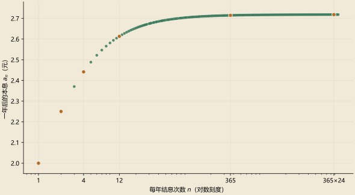
本息似乎不断增加，增加的幅度却在缩小，仿佛正趋向某个极限。找到这个极限，便能看清贪婪的边界，终结无止境的索求。
第十三节 · 单调有界有极限
想象沿着数轴向右走，每一步都不后退，而且前方有一道永远不能越过的界限。我们未必预先知道终点是多少，却可以证明：这些位置一定趋向某个确定的数。这是另一种得到极限的方法——先证明终点存在，再研究终点是谁。
若每一步都有 \displaystyle a_{n+1}\ge a_n，称数列单调不减；若每一步都有 \displaystyle a_{n+1}>a_n，称严格递增。将不等号分别反向，就得到单调不增与严格递减的定义。
若存在固定实数 \displaystyle B，使所有项都满足 \displaystyle a_n\le B，称数列有上界；将不等号改为 \displaystyle a_n\ge B，就得到有下界的定义。同时有上界与下界的数列，称为有界数列。
单调不减且有上界的实数数列，必有有限极限。 同样，单调不增且有下界的实数数列，也必有有限极限。这就是单调有界定理。
有界不等于知道准确极限。一个上界可以留有余地：为了证明数列有极限，我们可以先找一道容易验证的“围墙”。
判断数列 \displaystyle a_n=n 的单调性、有界性及收敛性。
比较 \displaystyle a_{n+1} 与 \displaystyle a_n，并考察 \displaystyle n 能否超过任意给定的实数。
数列 \displaystyle a_n=n 严格递增，但没有上界，也没有有限极限。这说明只有单调性，不能保证数列收敛。
判断数列 \displaystyle a_n=(-1)^n 的单调性、有界性及收敛性。
分别写出奇数项和偶数项。
数列各项在 \displaystyle-1 与 \displaystyle1 之间交替，因此有界，但不单调。它不收敛：若极限为 \displaystyle A，取 \displaystyle\varepsilon=1/2，充分靠后的奇数项与偶数项都应满足 \displaystyle|-1-A|<1/2 和 \displaystyle|1-A|<1/2。由三角不等式便有 \displaystyle2\le|-1-A|+|1-A|<1，矛盾。这说明只有有界性，也不能保证数列收敛。
回到复利数列。现在任务明确了：证明它向上走，再找一个共同的上界。 两件事都完成，就能确认隐藏 Boss 的极限确实存在。注意，这只是一个存在性证明，尚未求出极限的具体值。在数学中，证明一个对象存在，往往比求出它的具体表达式更为根本。
第十四节 · Boss 战—数 e
设 \displaystyle a_n=\left(1+\frac1n\right)^n。我们借助二项式展开，可以把 \displaystyle a_n 写成
\begin{aligned} a_n={}&1+1+\frac1{2!}\left(1-\frac1n\right) \\ &+\frac1{3!}\left(1-\frac1n\right)\left(1-\frac2n\right)\\ &+\cdots+\frac1{n!}\left(1-\frac1n\right)\cdots\left(1-\frac{n-1}{n}\right). \end{aligned}
这里 \displaystyle k!=1\cdot2\cdots k，并约定 \displaystyle0!=1。展开式只保留实际存在的项，首尾重合的项只计一次。下面分别证明这个数列的单调性与有界性。
二项式定理把一个和的整数次幂写成逐项相加的形式：
\begin{aligned} (1+u)^n={}&1+nu+\frac{n(n-1)}{2!}u^2+\cdots\\ &+\frac{n(n-1)\cdots(n-k+1)}{k!}u^k+\cdots+u^n. \end{aligned}
代入 \displaystyle u=1/n，常数项与一次项分别为 \displaystyle1 和 \displaystyle1。对 \displaystyle2\le k\le n，含 \displaystyle u^k 的项化为
\begin{aligned} &\frac{n(n-1)\cdots(n-k+1)}{k!}\cdot\frac1{n^k}\\ &\qquad=\frac1{k!}\cdot\frac nn\cdot\frac{n-1}n\cdots\frac{n-k+1}n\\ &\qquad=\frac1{k!}\left(1-\frac1n\right)\cdots\left(1-\frac{k-1}{n}\right). \end{aligned}
这就得到下面使用的展开式。把 \displaystyle n 换成 \displaystyle n+1，便得到另一个展开式；它的最后一项为 \displaystyle1/(n+1)^{n+1}。当 \displaystyle n=1 时，\displaystyle a_n 在 \displaystyle1+1 后没有其他项，比较时也就没有对应项。
将两个展开式对照来看：蓝色部分是对应项，赭色方框是新增项。
\begin{aligned} a_n={}&1+1+{\color{#387b9b}\frac1{2!}\left(1-\frac1n\right)}+\cdots\\ &+{\color{#387b9b}\frac1{n!}\left(1-\frac1n\right)\cdots\left(1-\frac{n-1}{n}\right)}, \end{aligned}
\begin{aligned} a_{n+1}={}&1+1+{\color{#387b9b}\frac1{2!}\left(1-\frac1{n+1}\right)}+\cdots\\ &+{\color{#387b9b}\frac1{n!}\left(1-\frac1{n+1}\right)\cdots\left(1-\frac{n-1}{n+1}\right)}\\ &+{\color{#b16c27}\boxed{\frac1{(n+1)^{n+1}}}}. \end{aligned}
对任意 \displaystyle2\le k\le n，两个展开式中分母为 \displaystyle k! 的项相互对应。它们的每一个括号都满足
\boxed{0<1-\frac jn<1-\frac j{n+1}},\qquad 1\le j\le k-1.
因此，相同数目的正因子逐一相乘，再除以同一个正数 \displaystyle k!，得到
\begin{aligned} &{\color{#387b9b}\frac1{k!}\left(1-\frac1{n+1}\right)\cdots\left(1-\frac{k-1}{n+1}\right)}\\ &\qquad>{\color{#387b9b}\frac1{k!}\left(1-\frac1n\right)\cdots\left(1-\frac{k-1}{n}\right)}. \end{aligned}
原有的对应项都增大，前面的 \displaystyle1+1 不变，还多出赭色方框中的正项，故对每个正整数 \displaystyle n，都有
\boxed{a_{n+1}-a_n\ge\frac1{(n+1)^{n+1}}>0.}
所以，复利数列严格递增。
对 \displaystyle n\ge2，展开式中每个括号都在 \displaystyle0 与 \displaystyle1 之间，因此
a_n\le2+\frac1{2!}+\frac1{3!}+\cdots+\frac1{n!}.
当 \displaystyle k\ge2 时，\displaystyle k!=1\cdot2\cdot3\cdots k\ge2^{k-1}，于是
\begin{aligned} a_n&\le2+\frac12+\frac1{2^2}+\cdots+\frac1{2^{n-1}}\\ &=3-\frac1{2^{n-1}}<3. \end{aligned}
再结合 \displaystyle a_1=2<3，可知无论结息多少次，本息都小于 \displaystyle3 元。这就找到了整个数列的共同上界。
复利数列严格递增且有上界，由单调有界定理，它必有一个有限极限。我们把这个数记作 \displaystyle e：
\begin{gathered} \boxed{e=\lim_{n\to\infty}\left(1+\frac1n\right)^n},\\ e\approx2.718281828459\ldots. \end{gathered}
先证明极限存在，再为它命名。提高结息频率可以增加本息，却无法使它无限增长；贪婪的边界，由此确定。
圆面积一战，我们从两侧夹住目标；复利这一战，我们先凭单调与有界确认极限存在，再把这个极限记作 \displaystyle e。有时先知道答案再证明，有时先证明有答案，才逐步认出它。 两条路，都是数学江湖中的惯用招数。
第十五节 · 回望来路
这一回，我们从一个圆和一本账簿出发，走进了极限的世界。圆的面积与复利看似毫不相干，却都把我们带到了同一个问题面前：变化不断继续，是否会趋向一个确定的结果？
我们先学会了描述问题。 从具体事物中提取数量，用集合说明研究哪些对象，用映射与函数说明它们怎样对应。内接多边形的面积与不同结息频率下的本息，都成了可以逐项计算、比较和研究的数列。
我们也学会了谨慎地谈论无限。 希尔伯特的酒店提醒我们，有限情形下的直觉不能不加检查地搬进无限。极限不要求某一步真正到达终点；\displaystyle \varepsilon–\displaystyle N 与 \displaystyle \varepsilon–\displaystyle \delta 语言，让我们能够用有限世界的工具，迎战无穷世界的敌人。
两场 Boss 战，各有一条关键定理。
| 工具 | 要检查的条件 | 这一回的用法 |
|---|---|---|
| 两边夹定理 | 目标被夹在两侧之间，两侧趋向同一个数 | 推出重要极限 \displaystyle\lim_{x\to0}\frac{\sin x}{x}=1，证明圆面积公式 |
| 单调有界定理 | 数列单调不减且有上界，或单调不增且有下界 | 证明复利数列收敛，为它的极限命名为 \displaystyle e |
两场 Boss 战留下了两个重要的极限：
\begin{gathered} \lim_{x\to0}\frac{\sin x}{x}=1,\\ \lim_{n\to\infty}\left(1+\frac1n\right)^n=e. \end{gathered}
这两个极限，也点明了本回的题眼：动中取静。动，是当 \displaystyle x 趋于 \displaystyle0、\displaystyle n 趋于无穷大时，函数值 \displaystyle\sin x/x 与数列项 \displaystyle(1+1/n)^n 随之变化；静，是它们各自趋向的确定的数——\displaystyle1 与 \displaystyle e。变化不必停止，我们仍能从中把握一个确定的极限。
过关所得不止于公式。我们学会了综合运用火眼金睛（图像）、极限的定义（普攻）、四则运算（连招）和换元法（七十二变），在面对不同的对手时选择合适的招式。
回看篇首王维的“行到水穷处，坐看云起时”，一路探寻，再静观变化的趋向，也与这一回的动中取静相映照。
合上这一回之前，试着不看讲义，回答三个问题：
- 我能否说清圆面积与复利分别对应哪个数列，下标表示什么？
- 我能否用自己的话解释“无论误差要求多小，最终都能一直满足”？
- 我能否说明两场 Boss 战各用了什么定理，并逐一核对它的条件？
若还能把某一步为什么成立讲给别人听，这份本领便更扎实了一分。下一回，我们将把极限用在另一个问题上：怎样描述某一瞬间的变化？